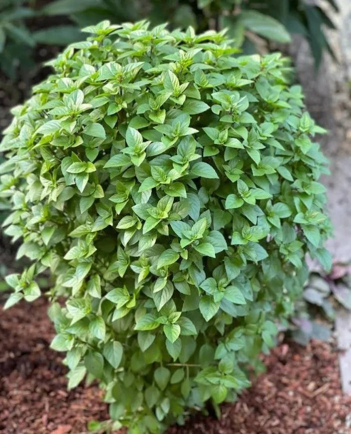
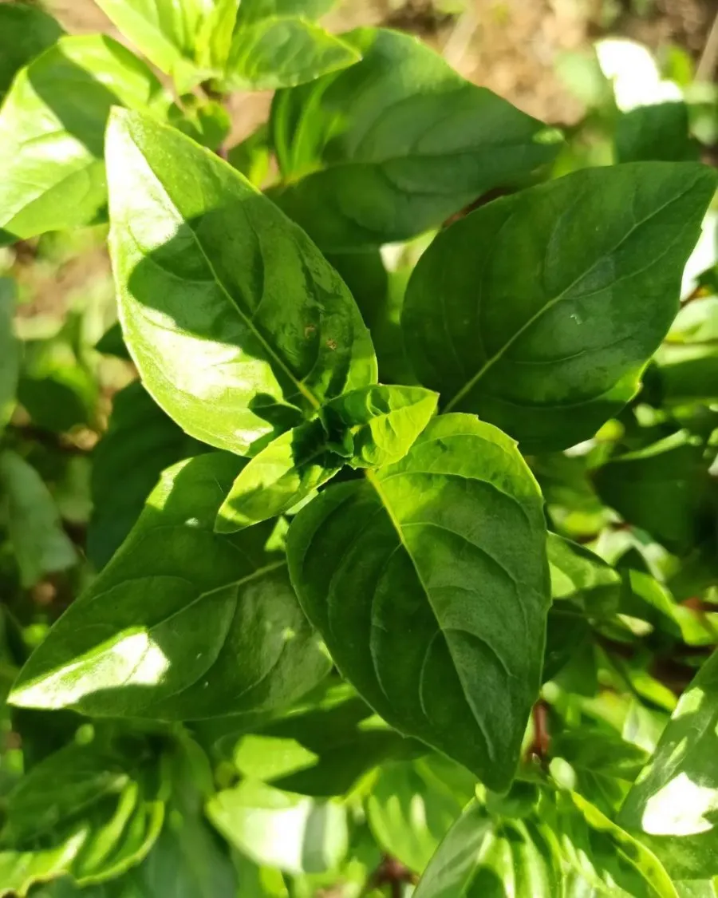
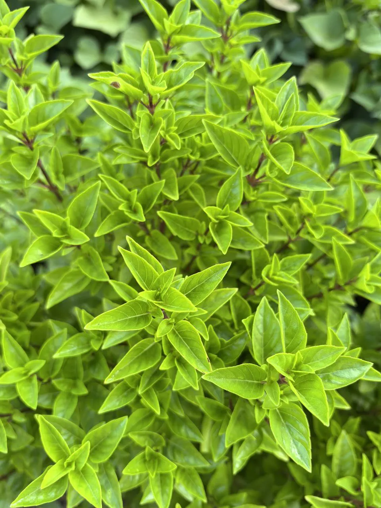
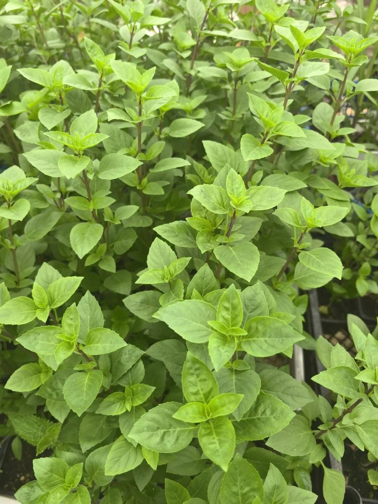
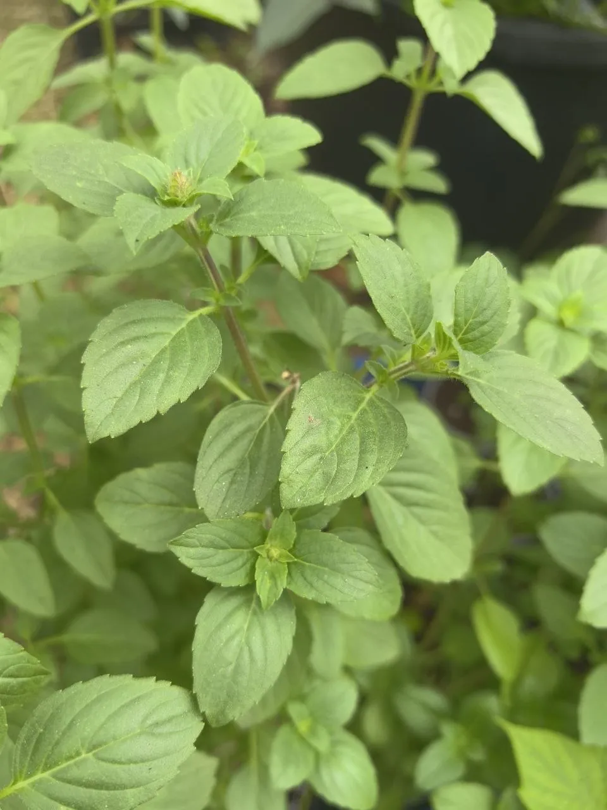

Многолетнее ароматическое растение с неповторимым изысканным ароматом. Яркий насыщенный букет с нотками базилика, гвоздики, перца, мяты и аниса.
Преимущества культуры для вашего участка.
Каждый сорт уникален — от формы до вкуса.
Базилик Кипрский в разные сезоны: от всходов до сбора урожая.





Всё, что нужно знать о культуре: от посадки до хранения.
Кипрский базилик совершенно неприхотлив. Главное — обеспечить тепло и свет.
Только черенкованием. Срежьте веточку, уберите нижние листья и поставьте в стакан с водой. Через неделю появятся корешки. Семян этот базилик не даёт.
Это многолетник с одревесневшим стволом. Он сохраняет зелень до заморозков и зимует дома. Аромат гораздо богаче — с нотками гвоздики, перца, мяты и аниса.
Нарежьте черенки и укорените в воде. Держите на южном солнечном подоконнике при +22°C с умеренным поливом. Всю зиму будет радовать свежей зеленью.
На солнечном месте. За лето он разрастается в метровый шар. Прекрасно растёт на солнцепёке, выдерживает полутень. В грунт высаживают после прогрева почвы до +15°C.
Посадочный материал из коллекции Batatchudo и рекомендации по выращиванию.